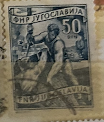
| SOURCE | TITLE| IMAGE MATCH | click to source page |
| eBay | Yugoslavia 639 nuevo 1950 sellos (9789141 | eBay | 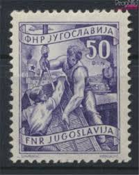 |
| eBay | Yugoslavia 315 / 1950-1951 50d Violet Loading Ship Stamp Pair, Precancel | eBay | 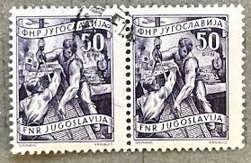 |
| eBay UK | FNR Yugoslavia 1945 1947 Set of 21 Stamps & 1950's + Set of 8 Red Cross OLD RARE | eBay UK | 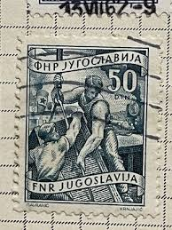 |
| eBay | 1950-51 Yugoslavia Lumbering Stamp SC#312 A68 USED | eBay | 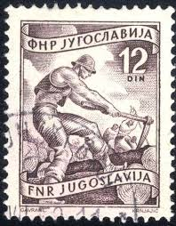 |
| HipStamp | DYNAMITE Stamps: Yugoslavia Scott #352 - USED | Europe - Yugoslavia, General Issue Stamp / HipStamp | 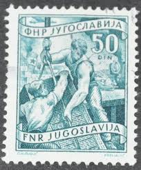 |
| Poppe Stamps | Poppe Stamps: Yugoslavia - Federal People?s Republic, 1950, 714, People, Harbors And Ports, Workers, People, Harbors And Ports, Workers - stamps for sale by theme and country | 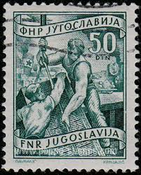 |
| lastdodo.de | 1953 Briefmarken von Jugoslawien mit dem Aufdruck STT VUJA Briefmarken-Katalog - LastDodo | 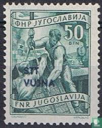 |
| Shutterstock | Yugoslavia Circa 1950 Stamp Printed Yugoslavia Foto de stock 161276291 | Shutterstock | 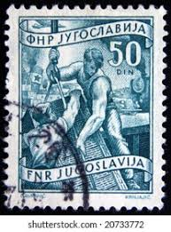 |
| Amazon.com | Amazon.com: Yugoslavia 688A 1951 Clear Brands (Stamps for Collectors) : Toys & Games | 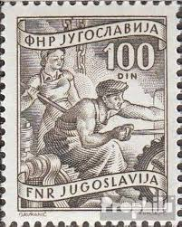 |
| Shutterstock | 3+ Thousand Circa 1950 Royalty-Free Images, Stock Photos & Pictures | Shutterstock | 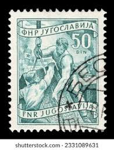 |
| Todocolección | yugoslavia, 1953, sello de tasa yvert 114 - Buy Antique stamps of Yugoslavia on todocoleccion | 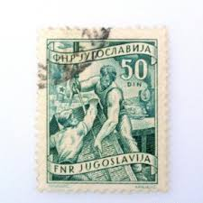 |
| aukcije.hr | aukcije.hr - Filatelija - Europa - Jugoslavija - 1944-1992 | 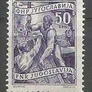 |
| ebid.net | Yugoslavia 1951 - 50d multi - local economy - used on eBid United Kingdom | 235665566 | 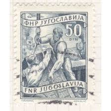 |
| Goglasi.com | 1950 Jugoslavija 5000 din -- Mali oglasi i prodavnice # Goglasi.com | 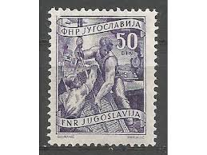 |
| Kupindo | 50 dinara 1950 FAZA crno bela neizdata UNC retko - Kupindo.com (57647899) | 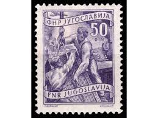 |
| Alamy | YUGOSLAVIA - CIRCA 1951: a stamp printed in the Yugoslavia shows Plane over Gulf of Kotor, Montenegro, circa 1951 Stock Photo - Alamy | 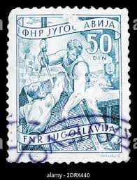 |
| Dreamstime.com | 1952 Commemorative American Automobile Association Postage Stamp AAA - United States Post Office 3 Cents Editorial Stock Photo - Image of office, automobile: 205468663 | 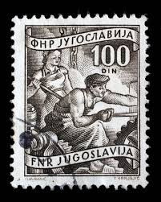 |
| Shutterstock | Czechoslovakia Circa 1954 Stamp Printed Czechoslovakia Stock Photo 85265554 | Shutterstock | 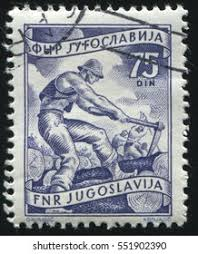 |
| Shutterstock | 15 Yugoslavia Surcharges Royalty-Free Images, Stock Photos & Pictures | Shutterstock | 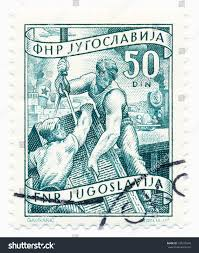 |
| Shutterstock | Yugoslavia Circa 1951 Stamp Printed Yugoslavia Stock Photo 564130258 | Shutterstock | 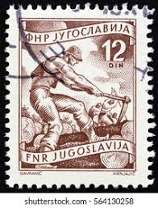 |
| Discover 40 filatelija Srbija and stamp ideas | serbia, postage stamps, stamp collecting and more | 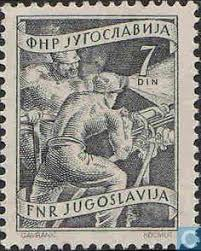 | |
| Amazon.de | Prophila Collection Yugoslavia 635 Mint NH 1950 Free Stamps (Stamps for Collectors): Amazon.de: Toys | 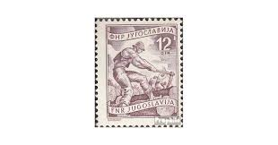 |
| buyhungarianstamps.com | 378-384A Yugoslavia - Types of 1950-1952, Set of 8 (MNH) – Eastern Europe Postage Stamps | Hungaria Stamp Exchange |  |
| Aukro.cz | YU 1924 Mi 184 ine raz. | Aukro | 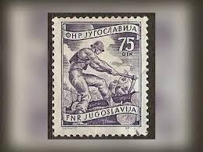 |
| Shutterstock | 4+ Thousand Yugoslavia Postage Stamp Royalty-Free Images, Stock Photos & Pictures | Shutterstock | 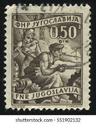 |
| Shutterstock | 2+ Thousand 1950 Picture Royalty-Free Images, Stock Photos & Pictures | Shutterstock | 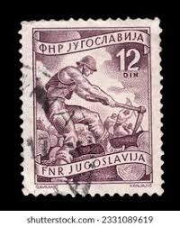 |
| HipStamp | Stamps Are Friends / HipStamp |  |
| Shutterstock | Old Postage Stamp Stock Photo 20603212 | Shutterstock | 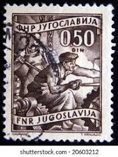 |
| Shutterstock | 5+ Hundred 1950 Construction Royalty-Free Images, Stock Photos & Pictures | Shutterstock |  |
| Dreamstime.com | Transport Workers, Definitives - Companies Serie, Circa 1951 Editorial Photography - Image of vintage, heritage: 141940247 | 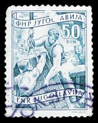 |
| PicClick IT | FRANCOBOLLI TRIESTE ZONA B 1954 Economia e Industria 5 d MNH** SAS98 EUR 1,05 - PicClick IT | 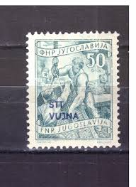 |
| Bob Shop | Yugoslavia - 1951-52 YUGOSLAVIA LOCAL ECONOMY was listed for 18.30 on 14 Dec at 08:02 by TROTSKIE in Cape Town (ID:660866265) | 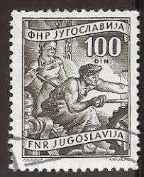 |
| Todocolección | yugoslavia. oficios. campesina. 1952-53. yt-592 - Buy Antique stamps of Yugoslavia on todocoleccion | 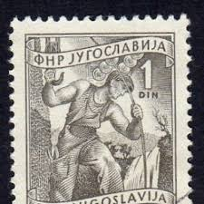 |
| Frimärks-Netto | Jugoslavien 639 stämplad | 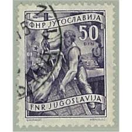 |
| Shutterstock | 3+ Hundred Coal Picture Shows Royalty-Free Images, Stock Photos & Pictures | Shutterstock | 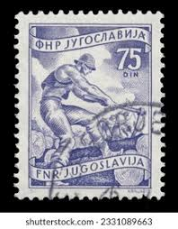 |
| Alamy | Woodworker hi-res stock photography and images - Alamy | 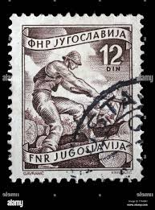 |
| Osta.ee | Jugoslaavia 1951 Ametid-puusepp ** (247860033) - Osta.ee | 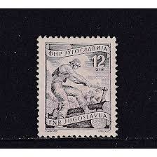 |
| eBay | Yugoslavia Business, Industry and Careers Stamps for sale | eBay | 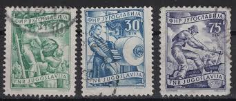 |
| Dreamstime.com | Stamp Issued in Yugoslavia Shows High Voltage Technician, Local Economy Series Editorial Image - Image of aged, office: 190206135 | 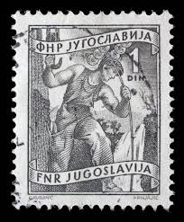 |
| Dreamstime.com | 360 People Power Stamp Stock Photos - Free & Royalty-Free Stock Photos from Dreamstime - Page 4 |  |
| Coinbazzar.com | Old Postal Stamp of Yugoslavia - 8 Dinar Blue Colour - Used Condition as per Image. - Coinbazzar.com | 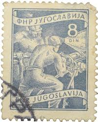 |
| Dreamstime.com | Ancient Cable Collector Stock Photos - Free & Royalty-Free Stock Photos from Dreamstime | 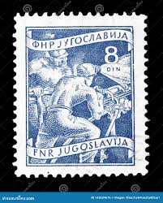 |
| Shutterstock | 4+ Thousand Yugoslavia Stamp Royalty-Free Images, Stock Photos & Pictures | Shutterstock | 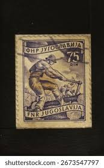 |
| Wikipedia | Postage stamps and postal history of Yugoslavia - Wikipedia | 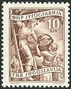 |
| eBay | Trieste B - 1953 - SC 75 - LH | eBay | 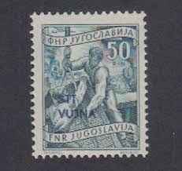 |
| eBay | USA5 # 984 MNH PB4 Annapolis 300 years | eBay | 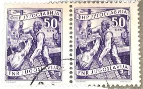 |
| Shutterstock | 8+ Hundred Worker 1950 Royalty-Free Images, Stock Photos & Pictures | Shutterstock | 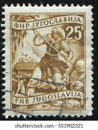 |
| Shutterstock | Ankara Türkiye 20 August 2021 Yugoslavia Stock Photo 2028221015 | Shutterstock |  |
| Shutterstock | 1+ Thousand Forestry Post Royalty-Free Images, Stock Photos & Pictures | Shutterstock | 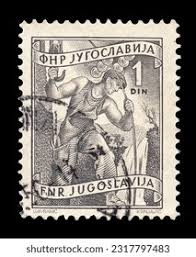 |
| eBay UK | Yugoslavia Used Stamp - Steel Worker 100 dinar, SG 716, 1952 | eBay UK | 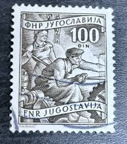 |
| eBay | YUGOSLAVIA-MNH DEFINITIVE STAMP , INDUSTRY - Mi.No. 722 - 1953. | eBay | 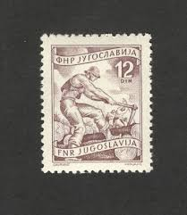 |
| Dreamstime.com | Industria Maderera, Aserradero, Princeton, Columbia Británica, Canadá Imagen de archivo editorial - Imagen de canadiense, fábrica: 388900799 | 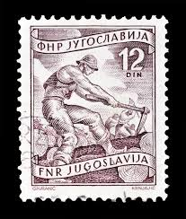 |
| eBay | Jugoslawien 1950 Mi. 635, 636, 639 Ungebr. * MH 100% Arbeiter, Arbeit | eBay | 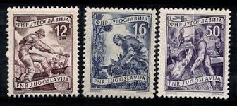 |
| Dreamstime.com | Woman in 1950´s Geek Style stock photo. Image of teacher - 29749902 | 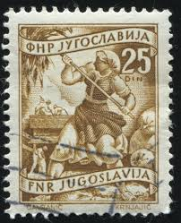 |
| HipStamp | Yugoslavia SC# 380 F-Vf MNH 1953 | Europe - Yugoslavia, General Issue Stamp / HipStamp | |
| Dreamstime.com | 110 Worker 1950 Stock Photos - Free & Royalty-Free Stock Photos from Dreamstime | |
| Alamy | Philately postage stamp yugoslavia hi-res stock photography and images - Page 11 - Alamy | |
| Alamy | Stamp issued in Yugoslavia shows High voltage technician, Local Economy series, circa 1950 Stock Photo - Alamy | |
| Todocolección | sello yugoslavia. oficios (1951-1953) - Buy Antique stamps of Yugoslavia on todocoleccion |